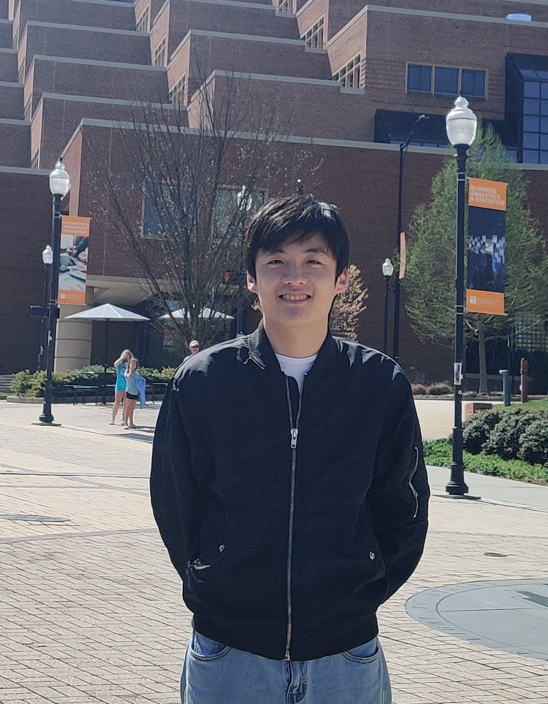

About Me
I am a fifth-year PhD. student in the Department of Statistics at the University of Missouri.
I am interested in Bayesian, physics-inspired, and modern data science methods for analyzing spatio-temporal datasets in official statistics and environmental science.